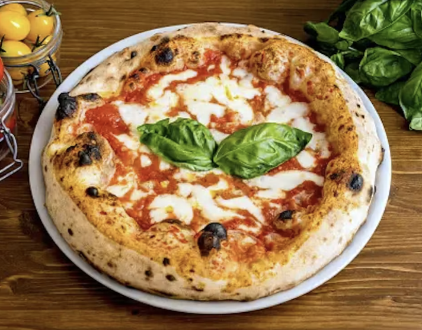

Pizza recipe

Description
Pizza is a italian dish that presents as a light weighted tomato pie with cheese on it.
it is delicious and light.
Ingredients
- 1 Delallo Italian Pizza Dough Kit
- Olive oil
- Sea salt
- Up to 1/2 cup of tomato sauce (try to use San Marzano tomato sauce)
- 4 tablespoons of finely grated Parmigiano-Reggiano cheese
- 6 ounces of fresh mozzarella cheese, cut into 1/2-inch pieces
- 1 plum tomato, sliced
- Fresh basil
- Dried oregano
- Red pepper flakes
Steps
-
Prepare the pizza dough: Combine the flour mix and yeast packet in a large mixing bowl with 1 1/4 cups of lukewarm water. Stir with a fork until the dough begins to form. Knead by hand for 3 minutes, or until the dough is soft and smooth.
-
Transfer the dough to a clean, lightly oiled bowl and cover tightly with plastic wrap.
-
Let the dough rise: Place the covered dough in a warm place until it doubles in size, approximately 45 minutes. Any unused dough can be refrigerated for up to 3 days.
-
Shape the dough: Divide the dough into 2–4 equal pieces, depending on your desired pizza size and thickness. Form each pizza crust by hand on a lightly oiled baking pan or pizza stone.
-
Preheat the oven: Preheat the oven to 500°F (260°C).
-
Add the toppings: Brush the pizza crust with olive oil and sprinkle with sea salt. Spread 1/4 to 1/2 cup of tomato sauce evenly over the crust. Add 2 tablespoons of finely grated Parmigiano-Reggiano, 6 ounces of fresh mozzarella cut into 1/2-inch pieces, and 1 sliced plum tomato.
-
Bake the pizza: Gently slide the pizza onto the heated baking stone or place it on a baking sheet lined with parchment paper. Bake at 500°F (260°C) for 7–8 minutes, or until the crust is golden and the cheese is bubbling.
-
Finish and serve: Remove the pizza from the oven. Add additional Parmigiano-Reggiano, fresh basil, and crushed red pepper. Serve promptly.
Home